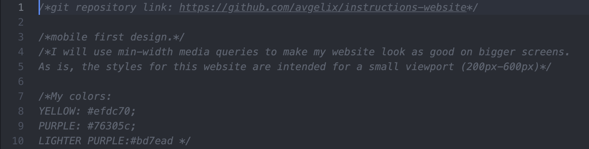

Creating an accessible, mobile-friendly website to display positioning
instructions for Holmes’ Ultrasonic Humidifier
Company:
Holmes. Holmes is a notable home products company. I developed a website to
make the positioning instructions for one of their products more accessible. The website
can be accessed by users with different needs and impairments. It doesn’t require reading,
and the positioning process is guided by icons or simple pictures. The website is fully
translatable, accessible from both mobile and bigger electronic devices.
Project Timeframe:
11/10/2021 - 11/22/2021. This project was
developed as part of my COM424 (Document Design) class at Illinois Tech, in Fall 2021.
Major Tasks & Responsibilities:
Develop a functioning website for both mobile and
desktop
Design Tools / UX Methods Used:
Figma, A/B Testing, Google Drawings, Content Strategy,
Technical Writing, Branding
Holmes is a company that produces home-related products. My role was to make the
positioning instructions for one of Holmes’ products accessible digitally, maintaining Holmes
brand identity and preserving the original copy provided on paper-based instructions for the
same product. I conducted this project on my own.
Research & Design Process
Firstly I analyzed the information available on the paper-based instructions, selecting
the content that would be most relevant to creating instructions specifically aimed at
positioning the product. Afterwards, I focused on the colors and fonts that would match Holmes
well-established brand identity. I created a stylesheet including these essential
elements.

Websites providing instructions are varied in essence, so I conducted
research on two relevant competitors in the home products field. In particular, Ikea’s
instructions served as a basis for me to understand the importance of having minimal,
non-ambiguous and easy-to-understand icons in my final version of the instructions.
Following best accessibility practices I decided to build the website in a way that even
without reading a single word one could benefit from the instructions. I chose minimal icons
that disambiguate the tasks users are required to perform to position the product effectively
and safely. The icons were picked from free-stock png websites. Some of the icons were also
subsequently modified by me using Google Drawings.
The website is fully translatable.
One pain point of the paper-based version of Holmes instructions is exactly that of not being
universally understandable, as only a finite number of languages can be provided. A
digitization of the instructions allows for increased reach and accessibility.
I had two people testing out my website before reaching the final stage of the product.
I used GitHub for version control and worked on several branches to keep working while my
website was being tested by my users through GitHub Pages.
Learnings
The most challenging part of the project was building the website in a way that reading was not
essential to the user experience. In the process of following instructions users are in all
sorts of mental states and physical conditions. Making the website as straightforward as
possible was a necessity, but providing additional text for those users who want to spend more
time and increase the accuracy of the positioning task was also essential to the project.